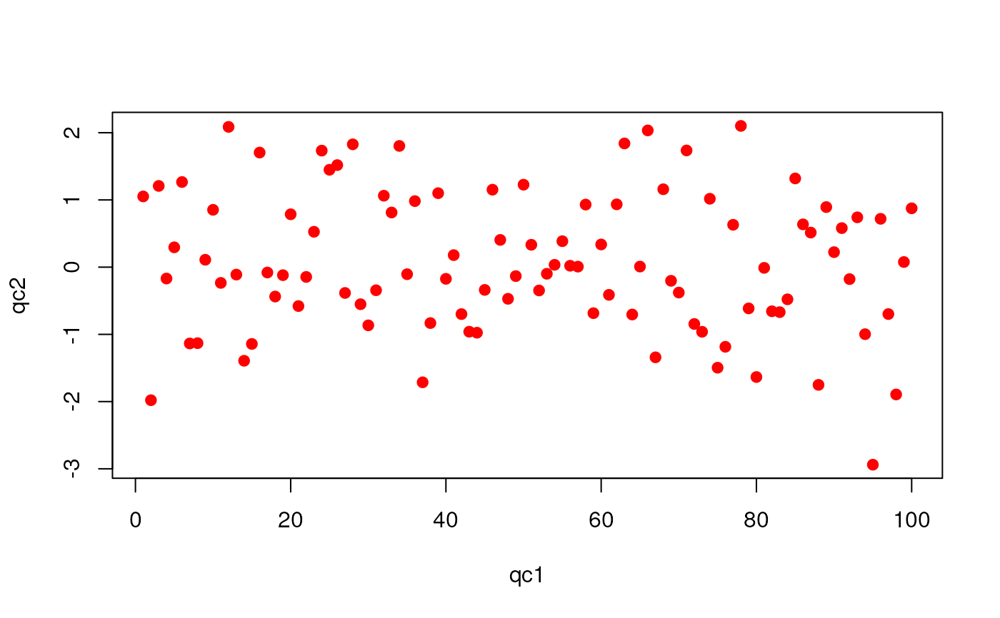

qcReport-methods.RdThe qcReport method generates report in various formats taking
a QcMetrics instance as input. Each individual
quality control item produces a section with description of the item
and a assessment figure.
The reporting functions take a QcMetrics instance as input,
generate the source of the report and compile it into the final format
that are currently available are reporting_pdf,
reporting_tex, reporting_rmd and reporting_html.
See qcto for details about the sectioning functions,
that convert individual QcMetric objects into adequate report
sections.
The package vignette documents the report generation in more details and describes possibilities for customisation.
signature(
object = "QcMetrics",
reportname = "character",
type = "character",
author = "character",
title = "character",
metadata = "logical",
toc = "logical",
summary = "logical",
sessioninfo = "logical",
template = "character",
clean = "logical",
quiet = "logical",
reporter,
qcto,
...)generates a report for the QcMetrics
object. The report will be named according the
reportname (default is qcreprt)and type, the
latter defining the output format and the extension. Possible
types are pdf (default), "tex", "Rmd", "html" (all
generated using the package knitr). A custom title
can be provided; default is "Quality control report generated with
qcmetrics". If no author is provided, the default value
(Sys.getenv("USER")) is used. The addition of a table of
contents (default is FALSE), a metadata section, a summary
section and the session information can be controlled with the
toc, metadata, summary and
sessioninformation arguments. The metadata section is
added to the report when present and the other have TRUE as
default. It is possible to supply custom templates using the
template arguments. Intermediate files are deleted, unless
clean is set to FALSE and verbose output can be turned
on by setting quiet to FALSE. The reporter and qcto arguments are used to convert
QcMetric and QcMetrics objects into report
source. See Details and the package vignette for details. Addition parameters can be passed to inner functions. For the
pdf report, passed to texi2pdf; for html,
passed to markdown::markdownToHTML. The method invisibly returns the name of the report that was
generated.
example(QcMetrics)
#>
#> QcMtrc> example(QcMetric)
#>
#> QcMtrc> (qc <- QcMetric())
#> Object of class "QcMetric"
#> Name: A QcMetric prototype
#> Status: NA
#> Data: empty
#>
#> QcMtrc> qcdata(qc)
#> character(0)
#>
#> QcMtrc> try(qcdata(qc, "x"))
#> Error in qcdata(qc, "x") : No qcdata 'x' in object.
#>
#> QcMtrc> x <- rnorm(10)
#>
#> QcMtrc> qcdata(qc, "qc1") <- x
#>
#> QcMtrc> qcdata(qc, "qc2") <- 1:10
#>
#> QcMtrc> qcdata(qc)
#> [1] "qc1" "qc2"
#>
#> QcMtrc> all.equal(qcdata(qc, "qc1"), x)
#> [1] TRUE
#>
#> QcMtrc> all.equal(qcdata(qc, "qc2"), 1:10)
#> [1] TRUE
#>
#> QcMtrc> name(qc) <- "My test QcMetric"
#>
#> QcMtrc> description(qc) <- "This qc metric describes bla bla bla, indicating possible issues in the third step of protocol bla bla bla."
#>
#> QcMtrc> status(qc) <- FALSE
#>
#> QcMtrc> qc
#> Object of class "QcMetric"
#> Name: My test QcMetric
#> Description:
#> This qc metric describes bla bla bla, indicating possible issues in the
#> third step of protocol bla bla bla.
#> Status: FALSE
#> Data: qc1 qc2
#>
#> QcMtrc> ## or
#> QcMtrc> e <- new.env()
#>
#> QcMtrc> e$qc1 <- rnorm(100)
#>
#> QcMtrc> e$qc2 <- 1:100
#>
#> QcMtrc> qcdata(qc) <- e
#>
#> QcMtrc> length(qcdata(qc, "qc1"))
#> [1] 100
#>
#> QcMtrc> head(qcdata(qc, "qc2"))
#> [1] 1 2 3 4 5 6
#>
#> QcMtrc> show(qc)
#> Object of class "QcMetric"
#> Name: My test QcMetric
#> Description:
#> This qc metric describes bla bla bla, indicating possible issues in the
#> third step of protocol bla bla bla.
#> Status: FALSE
#> Data: qc1 qc2
#>
#> QcMtrc> show(qc) <- function(object) cat("Updated show method\n")
#>
#> QcMtrc> show(qc)
#> Updated show method
#>
#> QcMtrc> show(qc) <- qcshow
#>
#> QcMtrc> qc
#> Object of class "QcMetric"
#> Name: My test QcMetric
#> Description:
#> This qc metric describes bla bla bla, indicating possible issues in the
#> third step of protocol bla bla bla.
#> Status: FALSE
#> Data: qc1 qc2
#>
#> QcMtrc> plot(qc)
#> Warning: No specific plot function defined
#>
#> QcMtrc> plot(qc) <-
#> QcMtrc+ function(object, ...)
#> QcMtrc+ plot(qcdata(object, "qc2"),
#> QcMtrc+ qcdata(object, "qc1"),
#> QcMtrc+ xlab = "qc1",
#> QcMtrc+ ylab = "qc2",
#> QcMtrc+ ...)
#>
#> QcMtrc> plot(qc)
#>
#> QcMtrc> plot(qc, col = "red", pch = 19)
#>
#> QcMtrc> ## Not run:
#> QcMtrc> ##D ## generate a report
#> QcMtrc> ##D qcReport(qcm)
#> QcMtrc> ## End(Not run)
#> QcMtrc>
#> QcMtrc>
#> QcMtrc>
#>
#> QcMtrc> show(qc)
#> Object of class "QcMetric"
#> Name: My test QcMetric
#> Description:
#> This qc metric describes bla bla bla, indicating possible issues in the
#> third step of protocol bla bla bla.
#> Status: FALSE
#> Data: qc1 qc2
#>
#> QcMtrc> qc2 <- QcMetric(name = "My other metric", status = TRUE)
#>
#> QcMtrc> qcdata(qc2, "x") <- rnorm(100)
#>
#> QcMtrc> qcdata(qc2, "k") <- rep(LETTERS[1:2], 50)
#>
#> QcMtrc> plot(qc2) <- function(object, ...) {
#> QcMtrc+ require("lattice")
#> QcMtrc+ d <- data.frame(x = qcdata(object, "x"),
#> QcMtrc+ k = qcdata(object, "k"))
#> QcMtrc+ bwplot(x ~ k, data = d)
#> QcMtrc+ }
#>
#> QcMtrc> qcm <- QcMetrics(qcdata = list(qc, qc2))
#>
#> QcMtrc> qcm
#> Object of class "QcMetrics"
#> containing 2 QC metrics.
#> and no metadata variables.
#>
#> QcMtrc> qcm[1] ## a QcMetrics instance
#> Object of class "QcMetrics"
#> containing 1 QC metrics.
#> and no metadata variables.
#>
#> QcMtrc> qcm[[1]] ## a single QcMetric
#> Object of class "QcMetric"
#> Name: My test QcMetric
#> Description:
#> This qc metric describes bla bla bla, indicating possible issues in the
#> third step of protocol bla bla bla.
#> Status: FALSE
#> Data: qc1 qc2
#>
#> QcMtrc> metadata(qcm)
#> list()
#>
#> QcMtrc> metadata(qcm) <- QcMetadata(list(name = "Prof. Who",
#> QcMtrc+ lab = "Cabin University"))
#>
#> QcMtrc> ## or, shorter but equivalent
#> QcMtrc> metadata(qcm) <- list(name = "Prof. Who",
#> QcMtrc+ lab = "Cabin University")
#>
#> QcMtrc> metadata(qcm) ## or mdata(qcm)
#> $name
#> [1] "Prof. Who"
#>
#> $lab
#> [1] "Cabin University"
#>
#>
#> QcMtrc> ## update metadata
#> QcMtrc> metadata(qcm) <- list(lab = "Big lab", ## updated
#> QcMtrc+ uni = "Cabin University") ## added
#>
#> QcMtrc> mdata(qcm)
#> $name
#> [1] "Prof. Who"
#>
#> $lab
#> [1] "Big lab"
#>
#> $uni
#> [1] "Cabin University"
#>
show(qcm)
#> Object of class "QcMetrics"
#> containing 2 QC metrics.
#> and 3 metadata variables.
destdir <- tempdir()
(report <- file.path(destdir, "testQCReport"))
#> [1] "/tmp/RtmpQmkp7p/testQCReport"
if (FALSE) {
## pdf report
qcReport(qcm, reportname = report)
## use pdflatex to generate the pdf file
qcReport(qcm, reportname = report, texi2dvi = "pdflatex")
}
## default html report
html <- qcReport(qcm, reportname = report, type = "html")
#> Report written to /tmp/RtmpQmkp7p/testQCReport.html
html
#> [1] "/tmp/RtmpQmkp7p/testQCReport.html"
if (interactive())
browseURL(html)
## using a custom css templates
writeLines("
body {
font-size: 14pt;
width: 650px;
background: #789855;
margin-left: auto;
margin-right: auto;
margin-top: 20px;
margin-bottom: 20;
text-align:justify;
}", con = "style.css")
html2 <- qcReport(qcm, reportname = "customreport", template = "style.css", type = "html")
#> Report written to customreport.html

if (interactive())
browseURL(html2)